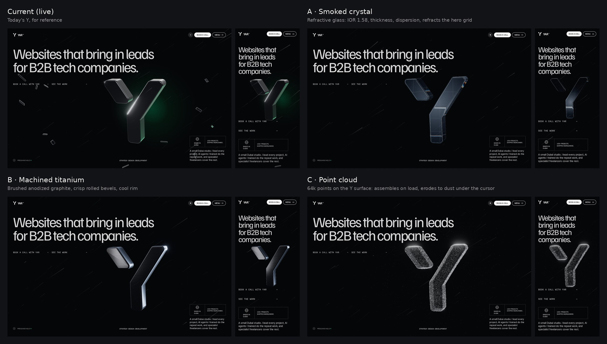

Internal preview, not indexed. Each page is the full home page with only the hero Y swapped. Move the cursor over the Y, press and hold, then scroll.

Refractive dark glass: the hero grid and studio lines bend through it, with a fine chromatic edge.
Brushed, anodized graphite with crisp rolled bevels; the key light follows the cursor across the metal.
64k points on the Y's surface: it condenses out of dust on load and erodes to dust under the cursor.